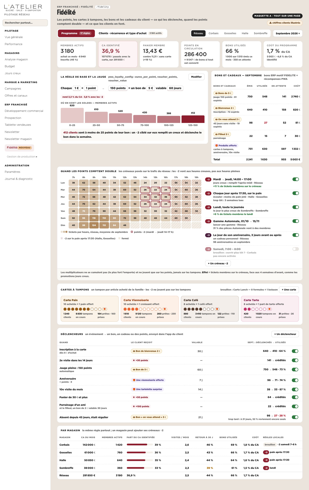
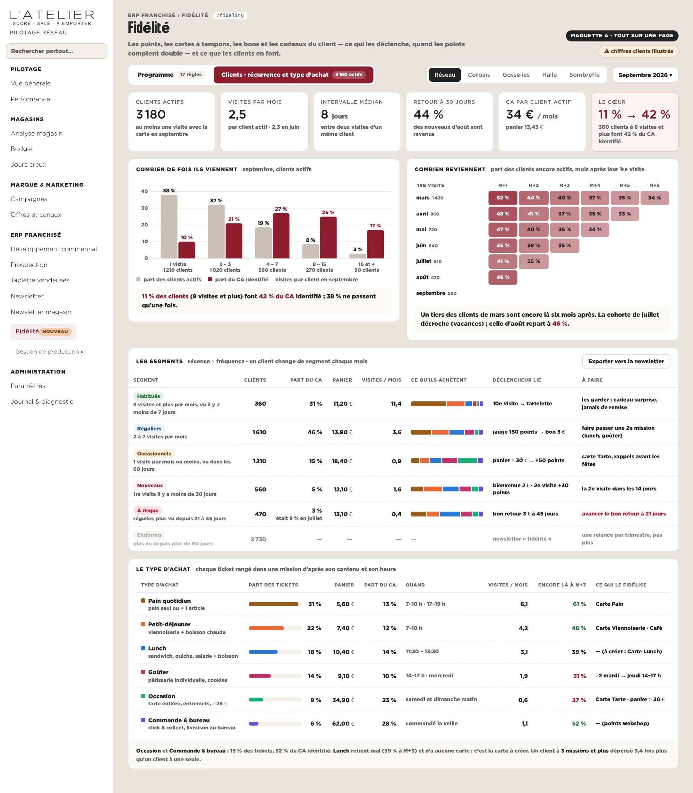
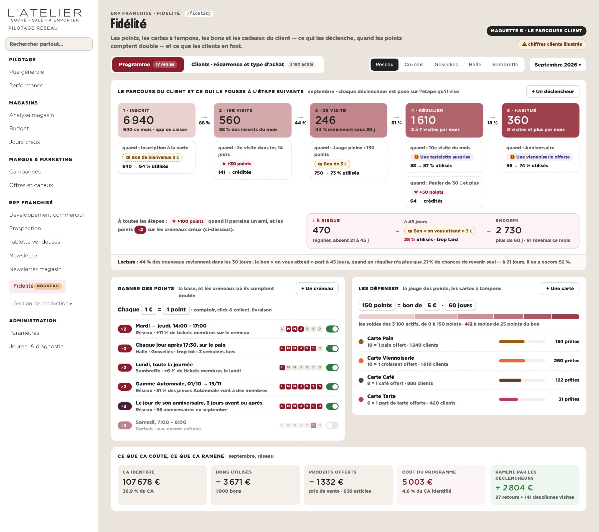
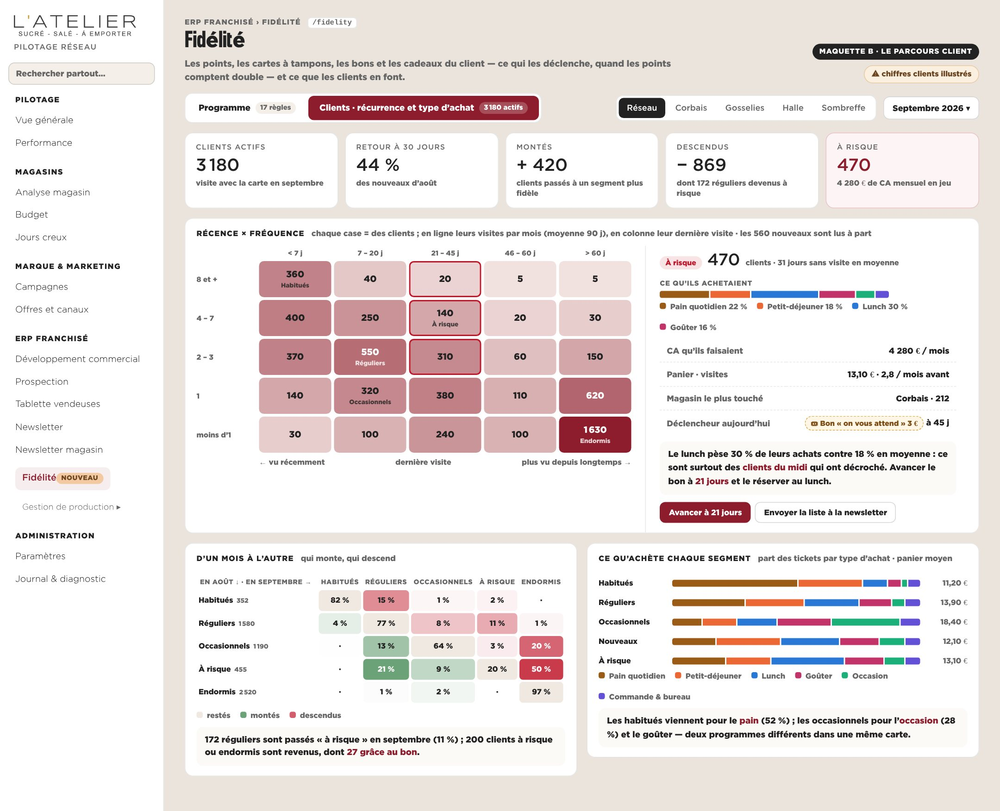
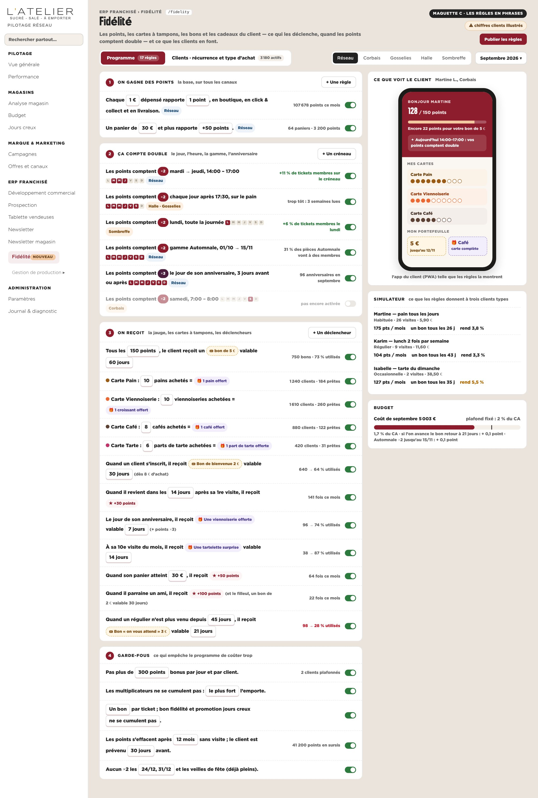
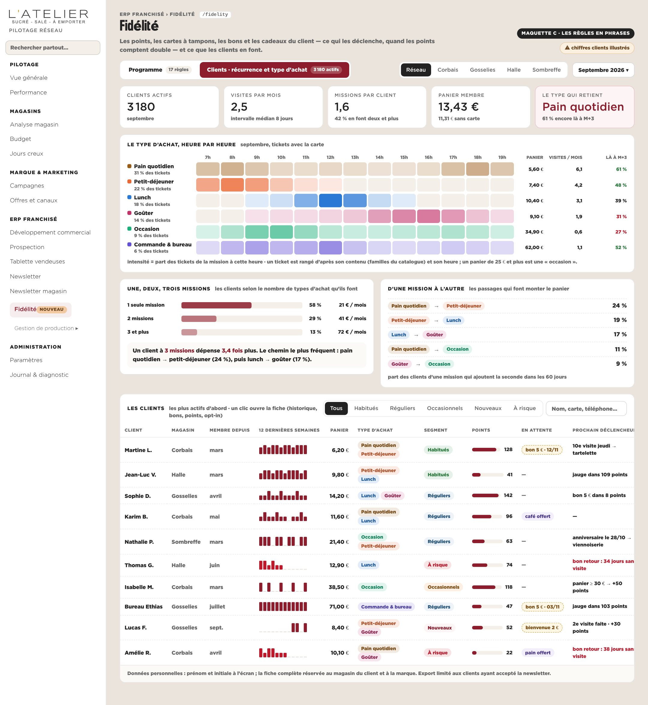
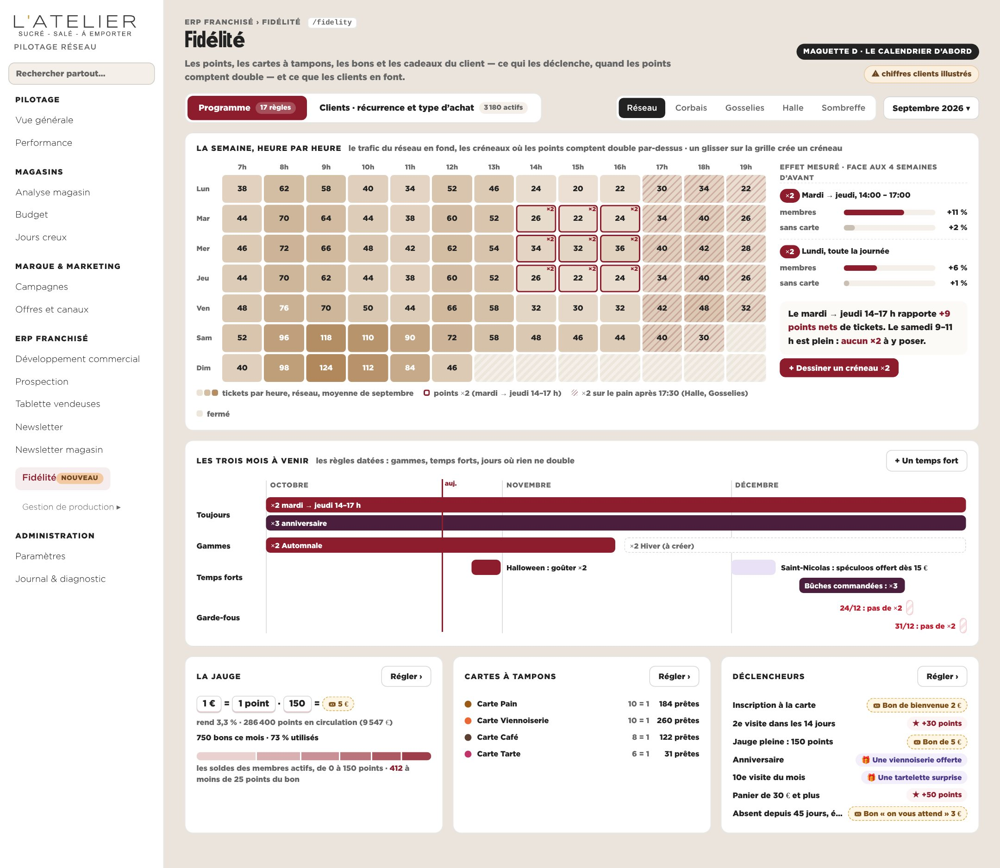
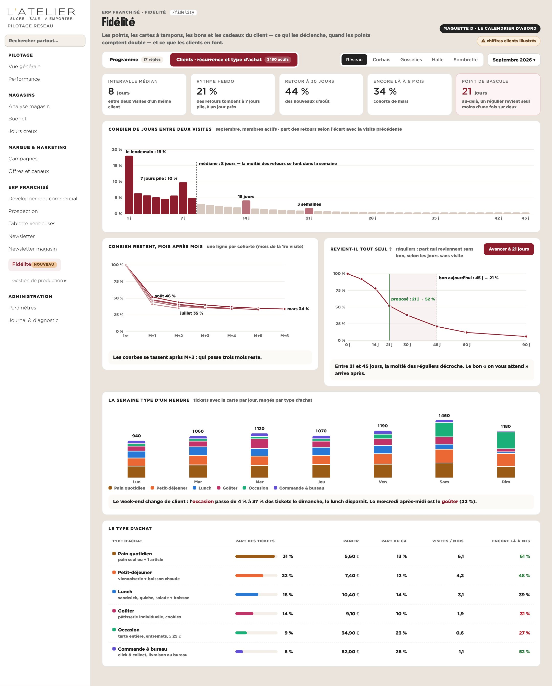

Une page, deux onglets. Programme : les points (1 € = 1 point, 150 points = un bon de 5 €), les cartes à tampons, les bons et cadeaux, les déclencheurs (bienvenue, 2e visite, anniversaire, 10e visite, panier ≥ 30 €, parrainage, client absent) et les créneaux où les points comptent double (jours et heures creux, gamme, anniversaire). Clients : la récurrence (fréquence, cohortes, segments, rythme) et le type d’achat (pain quotidien, petit-déjeuner, lunch, goûter, occasion, commande & bureau). Réel : les quatre magasins, le modèle de la PWA (cartes, jauge, ×2) et des bons ERP. Illustré : tous les chiffres clients.
Le format habituel du cockpit : six tuiles, puis une carte par brique — la jauge et les soldes, les bons et cadeaux du mois, la semaine heure par heure avec les créneaux ×2, les cartes à tampons, les déclencheurs, le détail par magasin. Côté clients : fréquence (part des clients face à la part du CA), cohortes, segments, types d’achat.


Les étapes du client — inscrit, 1re visite, 2e visite, régulier, habitué, puis à risque et endormi — avec, sous chacune, le déclencheur qui le pousse à l’étape suivante et ce qu’il a donné. Côté clients : la matrice récence × fréquence, le détail du segment choisi, qui monte et qui descend d’un mois à l’autre.


Chaque règle s’écrit comme une phrase aux valeurs modifiables (« Tous les 150 points, un bon de 5 € valable 60 jours »), en quatre blocs : on gagne, ça compte double, on reçoit, garde-fous. À droite, l’app du client telle que les règles la montrent, un simulateur sur trois clients types et le budget. Côté clients : le type d’achat heure par heure, les missions par client, la liste des clients.


La semaine heure par heure en grand, le trafic en fond et les créneaux ×2 par-dessus, avec l’effet mesuré de chacun (membres face aux non-membres) ; puis les trois mois à venir (gammes, temps forts, jours sans ×2) ; jauge, cartes et déclencheurs en trois cartes compactes. Côté clients : le rythme — jours entre deux visites, rétention par cohorte, retour spontané, la semaine type.

